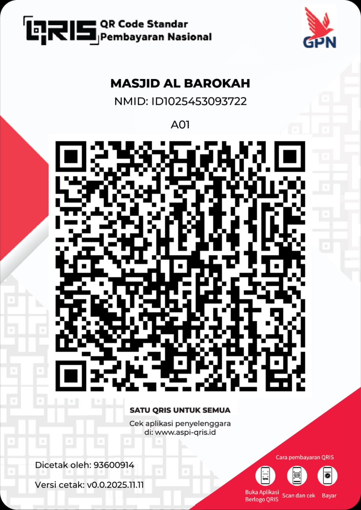

Profil Masjid
بِسْمِ اللَّهِ الرَّحْمَٰنِ الرَّحِيمِ
Selama 36 tahun berdiri, masjid ini telah menjadi pusat ibadah harian, pembinaan generasi muda, serta ruang kebersamaan warga sekitar.
Kondisi bangunan masjid sudah menua dan membutuhkan pembaruan menyeluruh agar tetap aman, nyaman, dan memadai untuk menampung jamaah yang terus bertambah. Oleh karena itu, panitia dan warga bersepakat melaksanakan rehab total demi menghadirkan fasilitas ibadah yang lebih kokoh dan representatif bagi generasi mendatang.
Donasi Pembangunan
Salurkan infak dan wakaf terbaik Anda untuk mendukung pembangunan dan kemakmuran Masjid Al-Barokah.
Transfer Bank Resmi:
BANK MANDIRI
1340031912743
a.n. DULKARIM (Bendahara)
Donasi Cepat QRIS
MASJID AL BAROKAH • NMID: ID1025453093722

Unduh Gambar QRIS
Informasi donasi dan pembangunan; 083821110706
Transparansi Dana
Ringkasan laporan pemasukan dan pengeluaran dana pembangunan masjid:
| Keterangan | Nominal |
|---|---|
| Total Donasi Masuk | Rp 0 |
| Total Pengeluaran Material & Tukang | Rp 0 |
| Saldo Kas Saat Ini | Rp 0 |